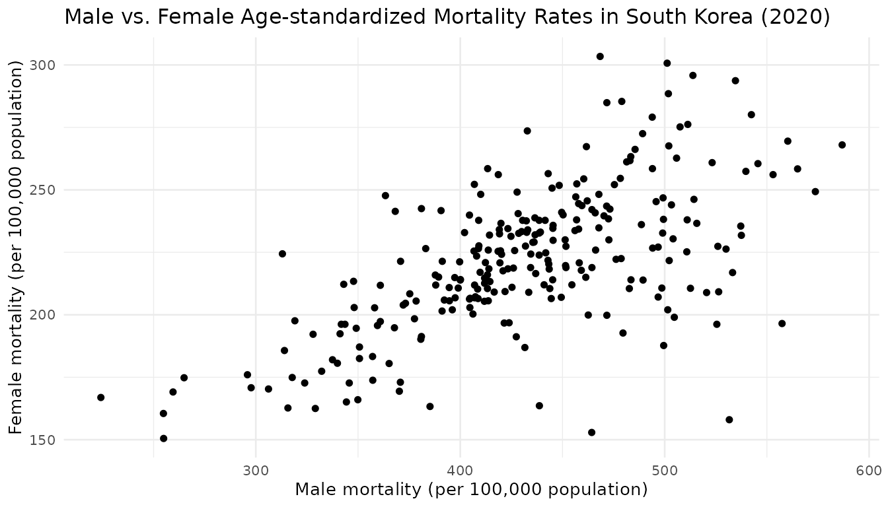

Getting Started with tidycensuskr
The tidycensuskr package provides easy access to South
Korean census and socioeconomic statistics, along with corresponding
geospatial boundary data. With this package, R users can query and
visualize population, housing, economy, tax, and mortality data linked
to administrative districts.
Load the package:
1. Understanding Korean Geographic Hierarchies
South Korean census data is organized by three levels of administrative divisions:
-
Si-Do: The highest level of administrative
division.
- Metropolitan cities are treated as provinces.
- Jeju-do, Gangwon-do, and Jeollabuk-do have special self-governing status under Korean law.
-
Si-Gun-Gu: The second level, which
includes cities and counties.
- Si: Cities (urban administrative units)
- Gun: Counties (rural areas, typically <50,000 population)
-
Gu: Districts (urban subdivisions of
metropolitan cities or large cities).
- Gu under metropolitan cities are autonomous districts
- Gu under 11 large cities, as of 2025 (i.e., Suwon-si, Seongnam-si, Anyang-si, Goyang-si, Ansan-si, Yongin-si, Cheongju-si, Cheonan-si, Pohang-si, Changwon-si, Jeonju-si), are administraitve districts
-
Eup-Myeon-Dong: The third level, which
includes town and districts. (planned for future releases)
- Eup: Towns (urban, >20,000 population, within a county)
- Myeon: Townships (rural, <20,000 population, within a county)
- Dong: Neighborhoods (smallest units within cities and districts)
Comparison of Administrative Divisions
The table below provides a rough comparison of administrative divisions across South Korea, the United States, the European Union, and the United Kingdom (England). While the correspondence is not exact, it can be helpful to understand the approximate levels when working with census or regional data.
| South Korea | US | EU (NUTS1) | UK (England) |
|---|---|---|---|
| Si/Do | State | NUTS1 | Regions / Combined Authorities |
| Si/Gun/Gu | County | NUTS2 | County |
| Eup/Myeon/Dong | Townships / Towns / Census County Division | NUTS3 | Districts / Wards / Boroughs |

Because administrative boundaries and coding systems can vary across
years and data sources, tidycensuskr harmonizes codes to
allow consistent integration of statistics. Currently, for 2020 data
there are 250 Si-Gun-Gu and 17 Si-Do.
adm2_2020 <- load_districts(year = 2020)
print(length(unique(adm2_2020$adm2_code)))
#> [1] 2502. Available census data
The package provides census and survey data through:
- The function anycensus() for querying subsets
- The built-in dataset censuskor in long format
Data types
| type | class1 | class2 | unit | description | available_years | data_provider |
|---|---|---|---|---|---|---|
| population | all households | total | persons | Total population | 2010, 2015, 2020 | Statistics Korea |
| population | all households | male | persons | Male population | 2010, 2015, 2020 | Statistics Korea |
| population | all households | female | persons | Female population | 2010, 2015, 2020 | Statistics Korea |
| economy | company | total | count | Number of business entities | 2010, 2015, 2020 | Statistics Korea |
| housing | housing types | total | count | Total number of housing units | 2010, 2015, 2020 | Statistics Korea |
| tax | income | general | million KRW | Comprehensive Income Tax | 2020 | National Tax Service |
| tax | income | labor | million KRW | Employment Income Tax | 2020 | National Tax Service |
| mortality | All causes | total | per 100k population | Age-standardized mortality rate | 2020 | Statistics Korea (Survey) |
| mortality | All causes | male | per 100k population | Age-standardized mortality rate (male) | 2020 | Statistics Korea (Survey) |
| mortality | All causes | female | per 100k population | Age-standardized mortality rate (female) | 2020 | Statistics Korea (Survey) |
Query data using anycensus()
The function anycensus() returns a tidy tibble with
columns such as:
-
year: year of the dataset -
adm1,adm1_code: Si-Do (province) level administrative unit name and its corresponding code -
adm2,adm2_code: Si-Gun-Gu (district) level administrative unit name and its corresponding code
Columns containing the values are added as a wide form. The column
adm2_code links census data directly to boundary files
retrieved with load_districts().
df_2020 <- anycensus(year = 2020,
type = "mortality",
level = "adm2")
head(df_2020)
#> # A tibble: 6 × 9
#> year adm1 adm1_code adm2 adm2_code type `all causes_total_p1p`
#> <int> <chr> <dbl> <chr> <dbl> <chr> <dbl>
#> 1 2020 Chungcheongbuk-do 33 Cheo… 33040 mort… 312.
#> 2 2020 Chungcheongnam-do 34 Cheo… 34010 mort… 321.
#> 3 2020 Gyeongsangbuk-do 37 Poha… 37010 mort… 318.
#> 4 2020 Gyeongsangnam-do 38 Chan… 38110 mort… 323.
#> 5 2020 Jeollabuk-do 35 Jeon… 35010 mort… 283.
#> 6 2020 Gyeongsangbuk-do 37 Ando… 37040 mort… 353
#> # ℹ 2 more variables: `all causes_male_p1p` <dbl>,
#> # `all causes_female_p1p` <dbl>The function can also aggregate values to higher administrative
units. By specifying level = "adm1" and providing an
aggregation function, we obtain province-level (adm1)
results that summarize across all districts.
df_2020_sido <- anycensus(year = 2020,
type = "mortality",
level = "adm1",
aggregator = sum,
na.rm = TRUE)
head(df_2020_sido)
#> # A tibble: 6 × 7
#> # Groups: year, type, adm1, adm1_code [6]
#> year type adm1 adm1_code `all causes_total_p1p` `all causes_male_p1p`
#> <int> <chr> <chr> <dbl> <dbl> <dbl>
#> 1 2020 mortality Busan 21 5367. 7327.
#> 2 2020 mortality Chungc… 33 5160. 7037.
#> 3 2020 mortality Chungc… 34 5707. 7646.
#> 4 2020 mortality Daegu 22 2486. 3405.
#> 5 2020 mortality Daejeon 25 1529. 1996
#> 6 2020 mortality Gangwo… 32 6125. 8382.
#> # ℹ 1 more variable: `all causes_female_p1p` <dbl>Built-in dataset censuskor
You can access the whole dataset directly using the function
data(censuskor) which returns the built-in dataset in a
long form.
-
year: year of the dataset -
adm1,adm1_code: Si-Do (province) level administrative unit name and its corresponding code
-
adm2,adm2_code: Si-Gun-Gu (district) level administrative unit name and its corresponding code -
type: Types of census or survey -
class1,class2: Classification variables providing further breakdowns -
unit: Measurement unit for the value -
value: The observed census value for the given combination of year, region, and category
data(censuskor)
head(censuskor)
#> year adm1 adm1_code adm2 adm2_code type
#> 1 2010 Chungcheongbuk-do 33 Cheongju-si 33010 population
#> 2 2010 Chungcheongbuk-do 33 Cheongju-si 33010 population
#> 3 2010 Chungcheongbuk-do 33 Cheongju-si 33010 population
#> 4 2020 Chungcheongbuk-do 33 Cheongju-si 33040 tax
#> 5 2020 Chungcheongbuk-do 33 Cheongju-si 33040 tax
#> 6 2015 Chungcheongbuk-do 33 Cheongju-si 33040 population
#> class1 class2 unit value
#> 1 all households total persons 646939
#> 2 all households male persons 318355
#> 3 all households female persons 328584
#> 4 income general million KRW 524478
#> 5 income labor million KRW 598560
#> 6 all households total persons 797099Quick Visualization
Since anycensus() returns tidy data, visualization with
ggplot2 is straightforward.
ggplot(df_2020, aes(x = `all causes_male_p1p`, y = `all causes_female_p1p`)) +
geom_point() +
labs(
x = "Male mortality (per 100,000 population)",
y = "Female mortality (per 100,000 population)",
title = "Male vs. Female Age-standardized Mortality Rates in South Korea (2020)"
) +
theme_minimal(base_size = 10)